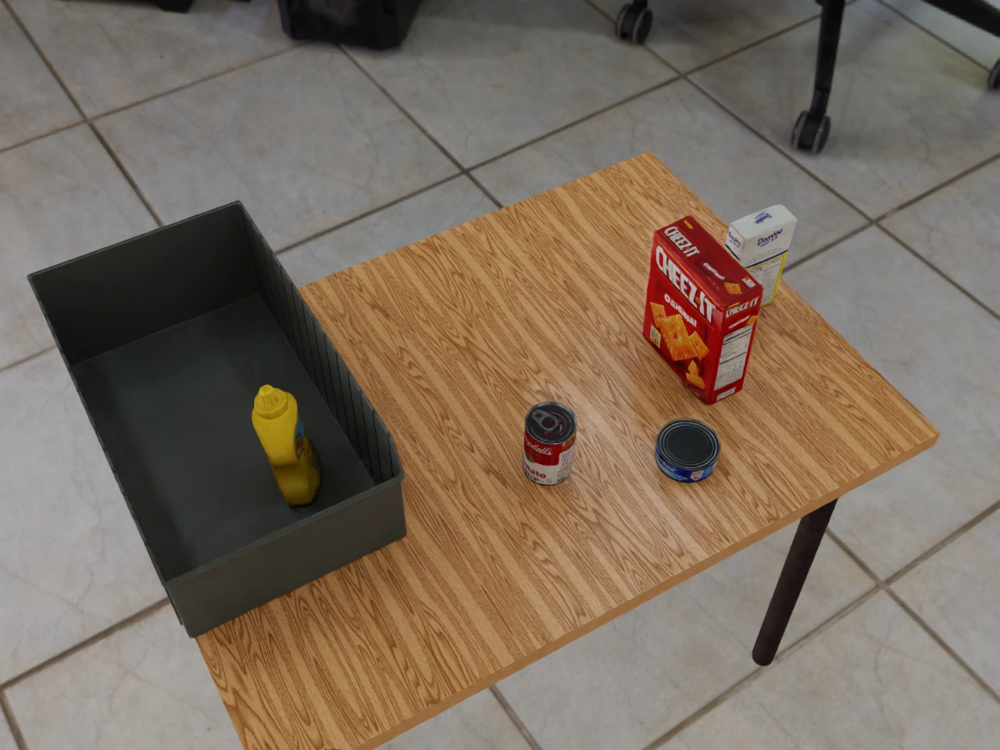
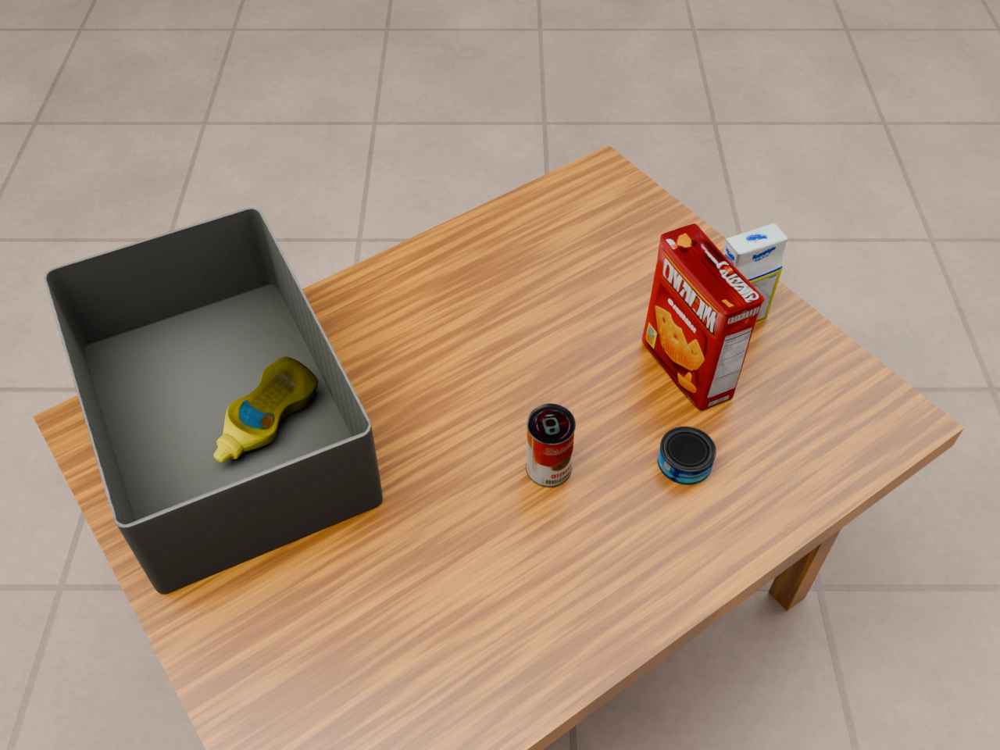
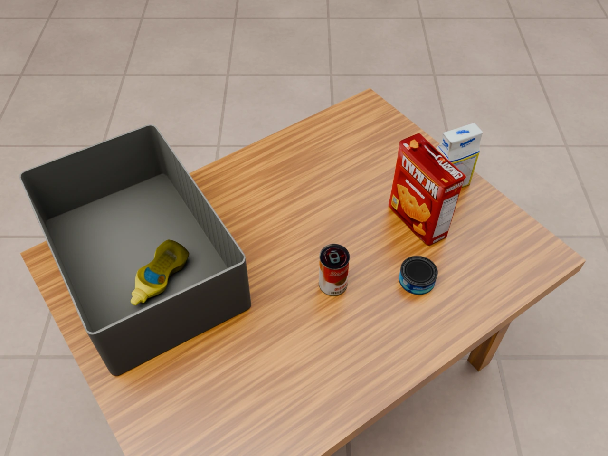
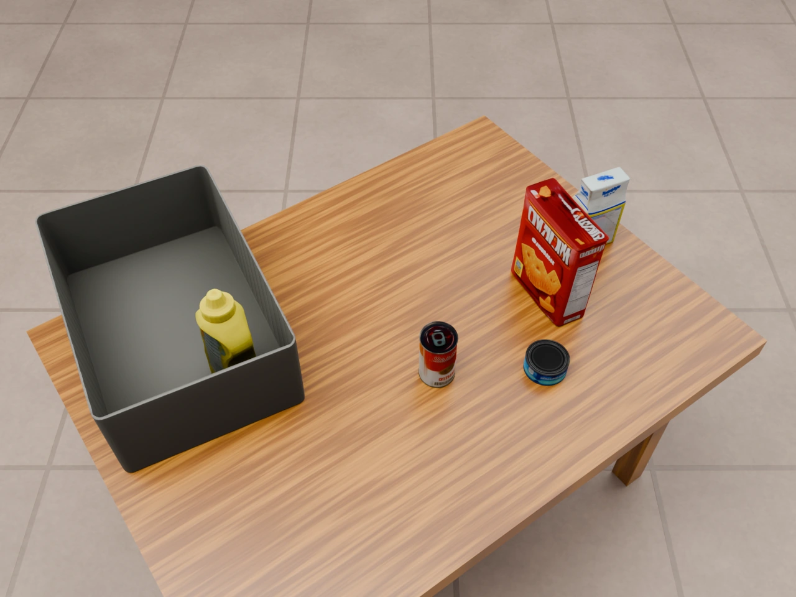

Question: What does the agent contribute beyond the Move tool?
A higher alignment score alone does not guarantee a good move. After simulation, the agent compares the resulting render with the input image to decide whether to retain the edit, revert it, or correct a remaining mismatch. An edit can pass physics checks and improve the score while still leaving the wrong object pose.
Example: the mustard bottle should stand upright
Scene: robolab_foodpacking_1bin_2box_2can.
Each column shows the full source view and the same enlarged image region.
Select a full view to open the image.

Upright in the input.

Already lying down.

Score improves; pose remains wrong.

Upright pose restored.
The two runs start from the same reconstruction and share the Move tool and physics checks. The heuristic accepts score-increasing moves: the bottle's score rises from 0.109 to 0.223, but it remains on its side. The agent compares the render with the input, recognizes the upright target, and corrects the bottle through simulated pose edits. It uses a direct Edit to change the bottle's attitude, then refines its placement with Move.
Inspect → edit → simulate → inspect → retain, revert, or revise.
The score provides feedback; visual inspection determines whether the resulting scene
matches the intended pose.